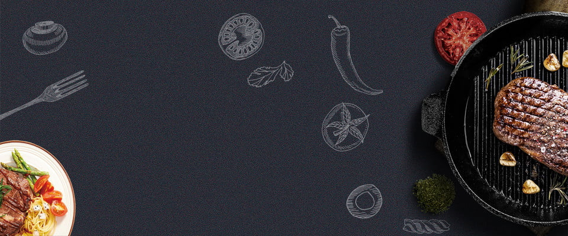
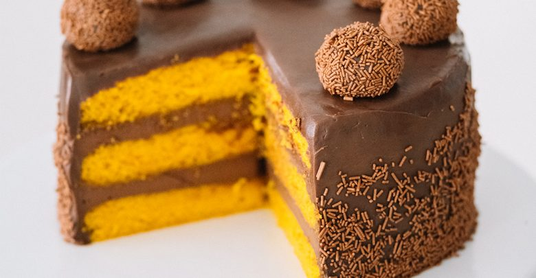
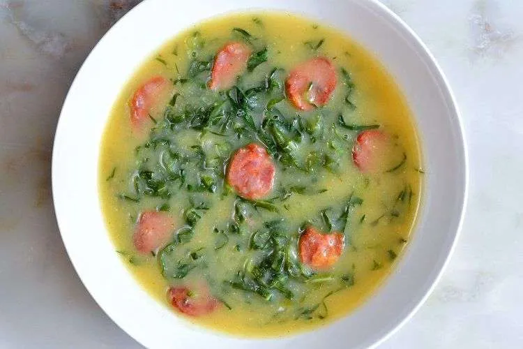

Meu Caderno de Receitas
Receitas
Cadastrar Receita

Quer fazer aquele bolo de cenoura mas esqueceu o caderno de receitas em casa?
Este é um caderno digital onde, você pode cadastrar as suas receitas e te-las na palma da mão, onde quer que você esteja.
Receitas Cadastradas

Bolo de Cenoura

Caldo Verde